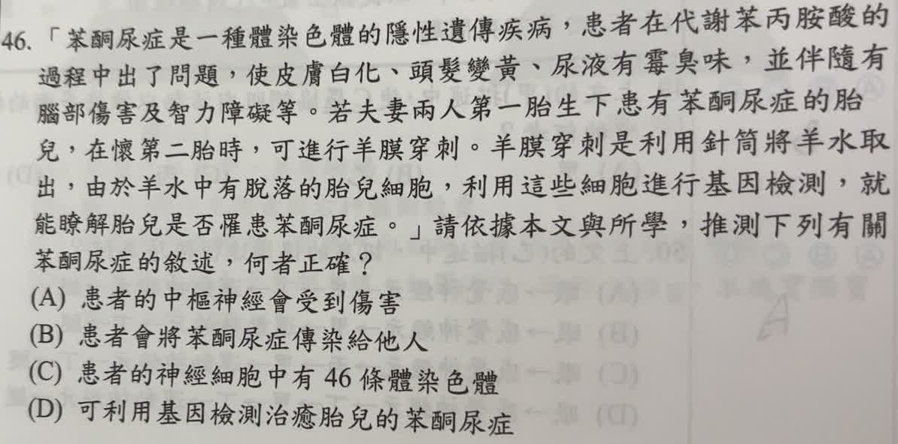

分享原卷｜第 46 題
完整原題
「苯酮尿症是一種體染色體的隱性遺傳疾病，患者在代謝苯丙胺酸的過程中出了問題，使皮膚白化、頭髮變黃、尿液有霉臭味，並伴隨有腦部傷害及智力障礙等。若夫妻兩人第一胎生下患有苯酮尿症的胎兒，在懷第二胎時，可進行羊膜穿刺。羊膜穿刺是利用針筒將羊水取出，由於羊水中有脫落的胎兒細胞，利用這些細胞進行基因檢測，就能瞭解胎兒是否罹患苯酮尿症。」請依據本文與所學，推測下列有關苯酮尿症的敘述，何者正確？
(A) 患者的中樞神經會受到傷害
(B) 患者會將苯酮尿症傳染給他人
(C) 患者的神經細胞中有46條體染色體
(D) 可利用基因檢測治癒胎兒的苯酮尿症
先想一想，再查看答案、解說與原圖
原卷作答：C
正確答案：A。文章已說明會有腦部傷害；腦屬中樞神經系統，因此 A 符合文章。
逐項解析
| 選項與原句 | 判讀 | 句意與判斷理由 |
|---|---|---|
| (A) 患者的中樞神經會受到傷害 | 應選 | 文章已說明會有腦部傷害；腦屬中樞神經系統，因此 A 符合文章。 |
| (B) 患者會將苯酮尿症傳染給他人 | 不選 | 遺傳疾病與傳染病不同，不能把基因遺傳誤寫為傳染。 |
| (C) 患者的神經細胞中有46條體染色體 | 不選 | 一般人體神經細胞有46條染色體，其中44條為體染色體，另2條為性染色體；不是46條體染色體。 |
| (D) 可利用基因檢測治癒胎兒的苯酮尿症 | 不選 | 文中基因檢測用來判斷是否罹病，不等於治癒疾病。 |
詳細說明與解題步驟
一、用文章直接驗證
文中明示「腦部傷害」，而腦、脊髓構成中樞神經系統，所以 A 有明確依據。
二、分清三組容易混淆的概念
遺傳與傳染：基因可從親代傳給子代，並非經一般接觸把疾病傳染給他人。
全部染色體與體染色體：一般人體體細胞共有46條染色體＝44條體染色體＋2條性染色體。C 的46條後面接「體染色體」，正是錯誤之處。
檢測與治療：檢測能提供是否罹病的資訊，不能把「檢測」本身當成「治癒」。
原卷選 C，可能記得46這個數字，卻沒有留意它修飾的是所有染色體還是體染色體。
名稱註記：題幹沿用原卷印刷的「苯酮尿症」；通常稱為苯丙酮尿症。此題複習重點是文章推論、遺傳與染色體分類。
核對註記：已核對題幹、全部選項與必要材料；教材對應課次未確認，歸綜合。
原圖（僅本題）
